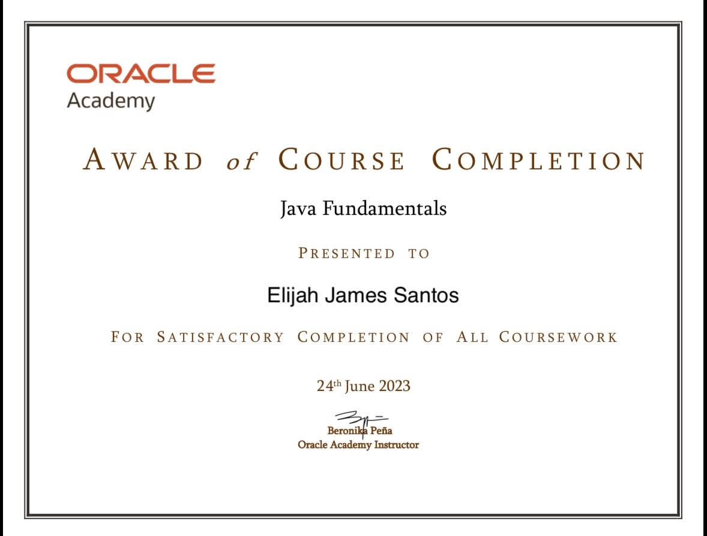
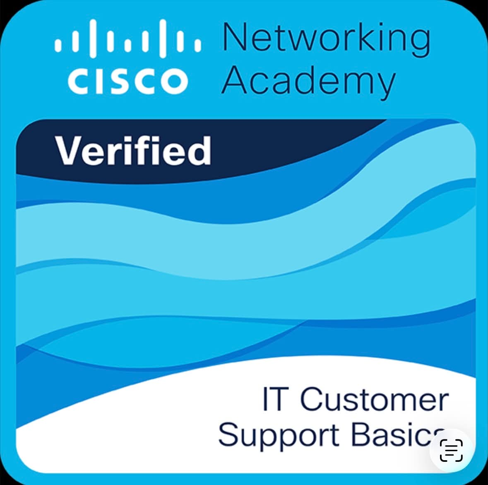
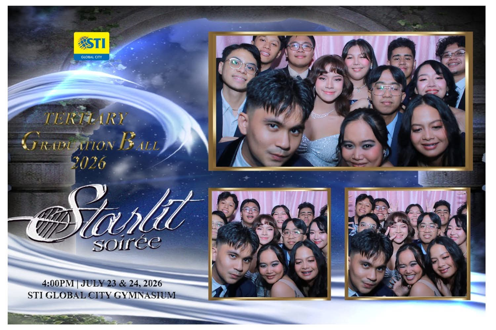

Hi, I'm Eli 👋
I'm an aspiring software engineer working across web, systems, and databases — currently looking for my first role on an engineering team.
Tech Stack
Click a tile to see what it is.
Projects
Click a project to expand it.
Smart web-based parking availability and reservation system built for STI College Global City. Provides real-time parking information and lets users reserve available spaces, reducing parking congestion and improving convenience. Act as the frontend developer on this capstone project. Unfortunately, the original domain has expired. (Hanapark.online).
View project →Another personal solo leveling themed portfolio project of mine to showcase my versatility regarding web designing and development.
View project →Pokécafé Planner: A responsive, calendar-style to-do planner with a café theme. Add, edit, complete, and delete orders by day, browse a month calendar, and track progress. Built with React and Vite, styled with custom CSS, saved with localStorage, and deployed on Vercel.
View project →Strategizing, designing, and configuring network infrastructure for Wayward Games through network simulation. Covers how a 5-story building's network connections are laid out, with recommended PC specs for each department to operate flawlessly.
A hard-coded UI/UX design concept for a mobile digital-privacy and security app, covering login and nine core features — from a password strength analyzer to a phishing detector — aimed at helping users protect their data and privacy online.
A commissioned website wireframe for Fempreneur, a small business selling handmade beaded jewelry and vintage clothing. My first web design project — designed entirely in Canva.
Trainings & Certifications
Click to expand.
As part of my BS Information Technology program at STI College Global City, I completed a 486-hour On-the-Job Training as an Office Trainee at Pag-IBIG Fund (HDMF), SM Aura Branch, from February to June 2026. Assigned to the MS II department, I provided operational support across daily office activities and occasionally assisted other departments, gaining a broad view of how a government organization runs.
The internship let me apply my IT coursework in a real workplace — troubleshooting hardware and software issues, supporting basic network maintenance, and working hands-on with Ethernet cabling and office systems like the Pag-IBIG ER Virtual platform. Beyond the technical side, it strengthened my communication, attention to detail, and professionalism, especially when handling confidential member transactions — lessons I'll carry into my IT career.

Java Fundamentals
Completed Oracle Academy's Java Fundamentals course, covering core Java syntax, object-oriented programming principles, and foundational problem-solving through code. Awarded June 24, 2023.
Systems Administration
Completed STI's Systems Administration course, part of the ICT curriculum, covering system setup, configuration, and maintenance fundamentals. Awarded June 24, 2023.
Network Simulation Facility — Final Oral Defense
Certificate of Completion for the Network Simulation Facility Final Oral Defense in Data and Digital Communications, presented by STI College Global City's ICT and Engineering Department on December 10, 2024.

IT Customer Support Basics
Verified completion of Cisco Networking Academy's IT Customer Support Basics course, covering foundational troubleshooting, customer service, and IT support skills.
About
I’m a fresh IT graduate with a Bachelor of Science in Information Technology, majoring in Game Development, with a strong interest in web development and artificial intelligence. I have academic experience working with HTML, CSS, JavaScript, React, and designing UI/UX, while continuously expanding my skills in AI and cybersecurity. As the team leader of HanaPark, a smart parking availability and reservation system, I gained hands-on experience in developing and leading a real-world project. I’m currently aspiring to build a career as a Front-End Developer or Software Engineer, creating modern, user-focused, and innovative solutions.
 Discord
Discord
 YouTube
YouTube
When I’m away from the computer, I usually like to slow down, relax, and enjoy the things I’m interested in. I spend my free time playing games, playing electric guitar, talking with friends on Discord, opening Pokémon TCG packs, and watching K-dramas, anime, and YouTube.
I’m also interested in cars, guitars, Pokémon cards, the latest technology, and exploring household decorations and appliances. Most of the time, I simply enjoy chilling and spending time with my hobbies and interests. I find that having time to relax and enjoy these things helps me recharge and come back to my work with a fresh mind.
Some of the happiest moments of my life have come from graduating, being surrounded by my family, and spending time with friends who keep me grounded. Click a stack to shuffle through the photos.
Graduation
Family
Friends
